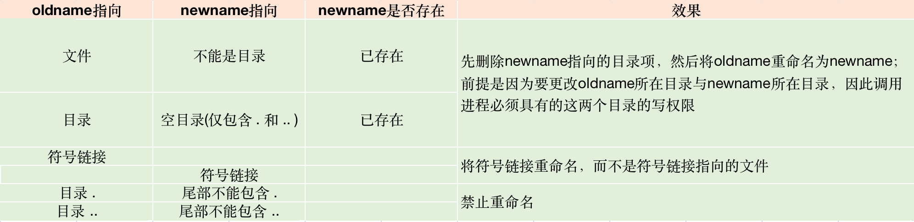

Unix-文件和目录
stat, fstat, fstatat, and lstat Functions
作用：获取文件的属性值（并存放在struct stat 变量中）
struct stat 结构体成员
struct timespec 结构体成员
1 | time_t tv_sec; |
关于文件类型 st_mode
新文件（新目录）的所有权
函数 access(), faccessat()
函数 umask()
同 umask命令。
通常，Unix 系统用户并不会设置 umask 值，只是在登陆时通过 shell start-up 文件会设置一次，之后便不会再更改。
若程序执行时需要确保某种具体的权限，那就必须调用 umask 重新设置文件创建屏蔽字。
umask 会将参数指定的权限关闭（注意，这里并不是开启）
umask() 为进程设置文件模式创建屏蔽字，并返回之前的值。简而言之设置屏蔽字后，所有当前进程创建的文件都是该屏蔽字权限。
cmask 参数由如下 9 个常量中的若干个按位或构成。
用于也可以直接指定一个 8 进制整数来设置文件创建屏蔽字：
示例：
函数 chmod(), fchmod(), fchmodat()
更改现有文件的访问权限。可以设置 set-user-id 位和 set-group-id 位。
mode 参数的取值为以下常量的按位或：
chmod 函数在以下两种情况下会自动清除权限位：
- 以非 root 用户在普通文件上设置粘着位（S_ISVTX）时，参数 mode 中的粘着位会自动关闭。
- 若新创建的文件的组 ID 既不等于进程的有效组 ID 在不是超级用户的前提下又不等于进程的附属组 ID，那么 set-group-ID 位将自动关闭。这将阻止用户创建一个该用户并不属于的组所拥有的 set-group-id 文件。
粘着位
粘着位由来：
在早起UNIX尚未采用请求分页式技术的早期版本中，
S_ISVTX位被称为粘着位。当可执行文件的粘着位被设置时，在第一次执行后终止时，程序正文部分（机器指令）仍旧保存在交换区，使得下次运行时能够快速将其装载进内存。
当今粘着位的作用：
若某目录设置了粘着位，只有当该目录具有写权限的用户且满足下列条件之一，才能删除或重命名该目录下的文件：
- 拥有此文件
- 拥有此目录
- 是超级用户
任何用户都可以在目录 /tmp 和 /var/tmp 创建文件。任意用户都有这两个目录的读写执行权限。但用户不应删除或修改其他人的文件，因此这两个目录的文件模式中都设置了粘着位。
函数 chown(), fchown(), fchownat(), lchown()
更改文件的用户 ID 和组 ID 。若两个参数 owner 或 group 中的任意一个是 -1，则对应的 ID 不变。
- 当设置 AT_SYMLINK_NOFOLLOW 标志集时， lchown 函数与 fchownat 函数改变符号连接本身的所有者，而不是符号连接所指向的文件。
- fchown 函数改变文件描述符 fd 所指向的文件的所有者，该函数不能用于符号连接。
| 函数名称 | fd | pathname | owner | group | flag | 作用 | ||||||
|---|---|---|---|---|---|---|---|---|---|---|---|---|
| chown | ||||||||||||
| fchown | 指向将要改变所有者的已打开文件 | |||||||||||
| fchownat | 绝对路径 | 类似 chown() 和 lchown() | ||||||||||
| fd 具有 AT_FDCWD 标志 | 相对路径 | |||||||||||
| 设置 AT_SYMLINK_NOFOLLOW 标志 | 类似 lchown() | |||||||||||
| AT_SYMLINK_NOFOLLOW 标志被清除 | 类似 chown() | |||||||||||
| fd 为已打开目录的文件描述符 | 相对路径 | fchownat 将计算相对于已打开的目录计算 pathname | ||||||||||
_POSIX_CHOWN_RESTRICTED 对更改属主/组的影响：
若_POSIX_CHOWN_RESTRICTED生效：可通过pathconf() / fpathconf() 查询该参数的取值。
- 只有超级用户进程能更改该文件的用户 ID
- 若进程拥有此文件（有效用户 ID 等于该文件的用户ID），参数 owner 等于 -1 或文件的用户 ID ，且参数 group 等于进程有效组 ID 或进程的附属组 ID 之一，则该非超级用户可更改该文件的组 ID
因此，当 _POSIX_CHOWN_RESTRICTED 生效时，不能更改其他用户文件的用户 ID，但可以更改你所有拥有的文件的组 ID，且只能改到你所属的组。
文件长度
由 struct stat 结构成员 st_size表示以字节为单位的文件长度，此字段仅用于普通文件、目录文件、符号链接、管道（FreeBSD8.0、MacOS X 10.6.8、SOlaris 10）。
- st_blksize 对文件IO操作较为合适的块长度
- st_blocks 每块分配512字节的块数（标准 IO 库中的函数为了提高读写效率，会一次读写 st_blocks 字节的数据）
文件截断
使用 open 函数截断：
在使用 open 打开文件时，可以指定 O_TRUNC 标志将文件长度截断为 0。
调用 truncate 函数：
这两个函数的功能是：将现有文件的长度截断为 length。若当前文件的长度大于length，则超过length的部分将不能再被访问；若当前长度小于length，文件长度将增加并产生一个空洞。
UFS 文件系统
- 每个分区仅包含一个文件系统
- i 节点长度固定，包含了文件的大部分信息
普通文件的 i 节点结构：
链接计数：
- 存在于每个 i 节点中，值为指向该 i 节点的目录项（块）数。
- 当链接计数为0时，才可以释放该文件所占用的数据块。
符号链接： 符号链接文件的实际内容存储于数据块中，仅包含实际文件的绝对路径名。
硬链接： 这种链接计数会累计在 stat 结构中的 st_nlink 成员中。这种链接直接指向文件的 i 节点
i 节点包含内容：
- 文件类型
- 文件访问权限位
- 文件长度
- 指向文件数据块的指针
- ……
目录项包含内容：
- 文件名
- i 节点编号: 指向同一文件系统中的相应 i 节点（ ln 命令不能跨越文件系统的原因）；i 节点编号的数据类型是 ino_t；
- ……
在同一个文件系统中，重命名文件（mv）时，只是新构造了一个指向现有 i 节点的新目录项，并删除旧目录项。链接计数不会改变。文件的实际内容也未发生移动。
目录的 i 节点结构:
图片说明：1267 i 节点是 2549 i 节点的父目录，且都表示一个目录。
任何一个叶目录（不包含子目录的目录）的链接计数总是2。
在父目录中的每一个子目录都使该父目录的链接计数加1。
图中 2549 i 节点是一个叶目录，其链接计数来自于命名该目录（testdir）的目录项以及该目录的 . 项
图中1267 i 节点的链接计数为 3: 命名它的目录项（图中未画出）、. 项、子目录testdir中的 .. 项
link() linkat()

函数说明：
- 引用现有文件 existingpath，创建一个新目录项 newpath。若 newpath 存在，则出错。
- 只创建 newpath 中的最后一个分量，路径中的其他部分应当已经存在
- 创建新目录项和增加链接计数是一个原子操作。
linkat参数说明：
- 当 exsitingpath 是相对路径时，则当前路径是相对于 efd 所打开文件所在的目录。newpath 同理。
- 当 efd 设置 AT_FDCWD 标志，且 existingpath 为相对路径时，路径名通过当前目录进行计算。nfd 与 newpath 同理。
- 当 existingpath 为绝对路径名，则 efd 被自动忽略。newpath 同理。
当 existingpath 为符号链接时，若 flag 设置了 AT_SYMLINK_FOLLOW 标志，则创建指向符号链接的链接；若不设置该标志，则创建一个指向符号链接本身的链接。
函数 unlink(), unlinkat()
函数说明：
- 删除目录项，并使由 pathname 所引用文件的链接计数减1。
- 前提是必须对包含该目录项的目录具有写和执行权限。
- 仅能删除符号链接，不能删除符号链接所指向的文件。
参数说明：
- pathname 为相对路径名，unlinkat 计算相对于由 fd 代表的目录的路径名。若 fd 设置了 AT_FDCWD 标志，则计算相对于调用进程的当前工作目录来计算路径名。
- 若 pathname 为绝对路径名，则 fd 参数被忽略。
- 当 flag 设置 AT_REMOVEDIR 标志时，unlinkat 功能类似于 rmdir ；若不设置该标志 unlinkat 与 unlink 执行同样的操作。
一个应用场景：
文件内容当满足如下两个条件时才会被清除：
- 链接计数为0
没有进程打开过该文件
若要实现进程打开的文件为临时文件（打开该文件的进程退出后，这些临时文件自动清除的功能）；
函数 remove()
解除对一个文件或目录的链接。
对于文件，相当于 unlink()
对于目录，相当于 rmdir
函数 rename(), renameat()

- 除了当 oldname 或 newname 指向相对路径名时，其他情况下，renameat 与 rename 功能相同。
- 若 oldname 指定的是相对路径，则相对于 oldfd 参数引用的目录计算 oldname。同理 newname 类似。
- 若 oldname 设置了 AT_FDCWD 标志，则相对于当前目录来计算相应路径名。
符号连接
引入符号链接的原因：
- 硬链接通常要求链接和文件位于同一个文件系统中，且难于消除循环硬链接的问题。
- 只有超级用户才能创建指向目录的硬链接（在底层文件系统支持的情况下）
符号链接是对一个对象的间接指针，至于是何对象并无任何文件系统限制，可以是普通文件也可以是一个目录等。符号链接不改变文件的所在位置，而仅是将一个文件或整个目录结构移到系统的另一个位置。
特殊地，当 open 函数的参数具有 O_CREAT、O_EXCL 标志时，路径名为引用符号链接，调用时将出错，errno 为 EEXIST
函数 symlink(), symlinkat()
创建一个符号链接
函数说明：
创建指向 actualpath 的新目录项 sympath。不要求 actualpath 已存在（不存时能够创建成功但是读取时报错），也不要求 actualpath 与 sympath 在同一文件系统中。
函数区别：
当 symlinkat 指定了设置 AT_FDCWD 标志的 fd 参数，或者 sympath 且绝对路径，symlinkat 与symlink 无区别。否则，sympath 根据相对于 fd 参数引用的目录进行计算。
函数 readlink(), readlinkat()
用于读取符号链接自身的数据（实际文件的路径名）。
函数区别：
- 对于 readlinkat 来说，当 pathname 指定的是绝对路径或者 fd 参数值为 AT_FDCWD 时，readlinkat 与 readlink 一样。
- 若 fd 参数引用的是目录，且 pathname 是相对路径名，则 readlinkat 计算相对于由 fd 引用目录的路径名。
函数 mkdir(), mkdirat()
参数说明：
- mode 表示文件访问权限，由进程的文件模式创建屏蔽字修改。
- mode 必须指定至少一个执行权限位，以允许访问该目录中的文件名。
函数区别：
对于 mkdirat 而言，当 fd 参数为 AT_FDCWD 或 pathname 参数指定了绝对路径名时， mkdirat 与 mkdir 完全一样。否则，fd 参数只能引用目录，相对路径名据此目录进行计算。
函数 rmdir()
用于删除一个空目录
- 如果在链接计数达到 0 时，有一个或多个进程打开此目录，则在此函数返回前删除最后一个链接及
.和..项。 - 调用后，没有任何进程可以在此目录创建文件。该删除的目录只有在所有进程都关闭它时，其所占用的空间才被释放。
读目录
函数说明：
- opendir 执行初始化操作，使第一个 readdir 返回目录中的第一个目录项。
- DIR 结构由 fdopendir 创建时，readdir 返回的第一项取决于传给 fdopendir 函数的文件描述符相关联的文件偏移量。
- direct 结构中至少包含两个成员变量：
- ino_t d_ino;
- char d_name[]; // 大小受NAME_MAX（单位：字节）的限制
函数 chdir(), fchdir()
更改当前进程的工作目录。
对于工作目录的理解：以登陆 shell 为例，当用户登陆后，会直接进入到
/etc/passwd中第六个字段指定的路径中，并以此目录作为当前工作目录。
函数 getcwd()
获取当前工作目录的绝对路径名
参数说明：
buf：用于存储当前工作目录的绝对路径名，应分配长度为路径长度+1（NULL 作为结束标志）；也可以不分配由函数内部进行分配。
fchdir()与getcwd()的一个应用：切换工作目录
- 切换到其他位置前，使用 open 打开当前工作目录，然后保存其返回的文件描述符。当需要返回原来工作目录时，只需将原来的文件描述符传递给 fchdir 即可。
- 切换位置前，使用 getcwd 保存当前的工作位置，当需要切换回来的时候调用 chdir 返回原来工作目录
设备特殊文件(关于st_dev, st_rdev)
示例：
- 从程序 a.out 的输出看，根目录和
/home/sar目录的设备号不同，它表示它们位于不同的文件系统中。两个终端设备（st_dev）的文件名和 i 节点在设备 0/5 中，但是它们实际设备号是 4/0 和 4/1. - 通过 ls 查看 mount 命令报告的两个磁盘设备和两个终端设备。这两个磁盘设备是块特殊文件，而两个终端设备是字符特殊文件。
- 通常只有那些包含随机访问文件系统的设备类型是块特殊文件设备，如磁盘驱动器，软盘驱动器等。